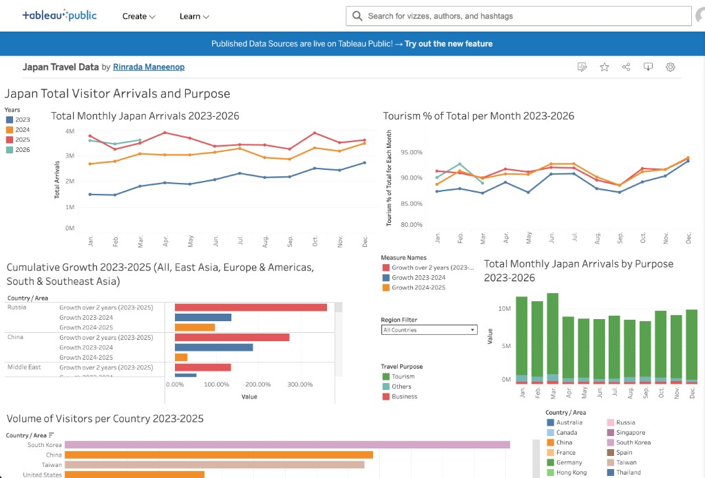

Japan Travel Data
Extracted and analyzed 5+ years of Japan Tourism Statistics using SQL and Excel, building automated Tableau dashboards that surfaced key market KPIs to inform go-to-market strategy for a new eSIM product.
- Tableau
- Data Visualization
- Data Analysis